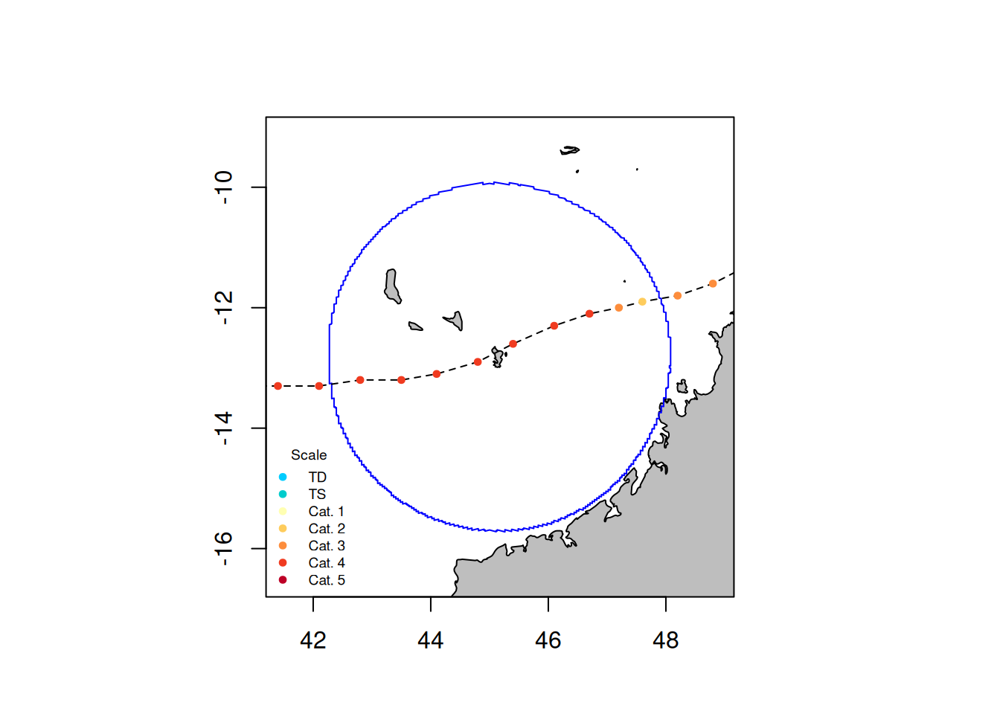
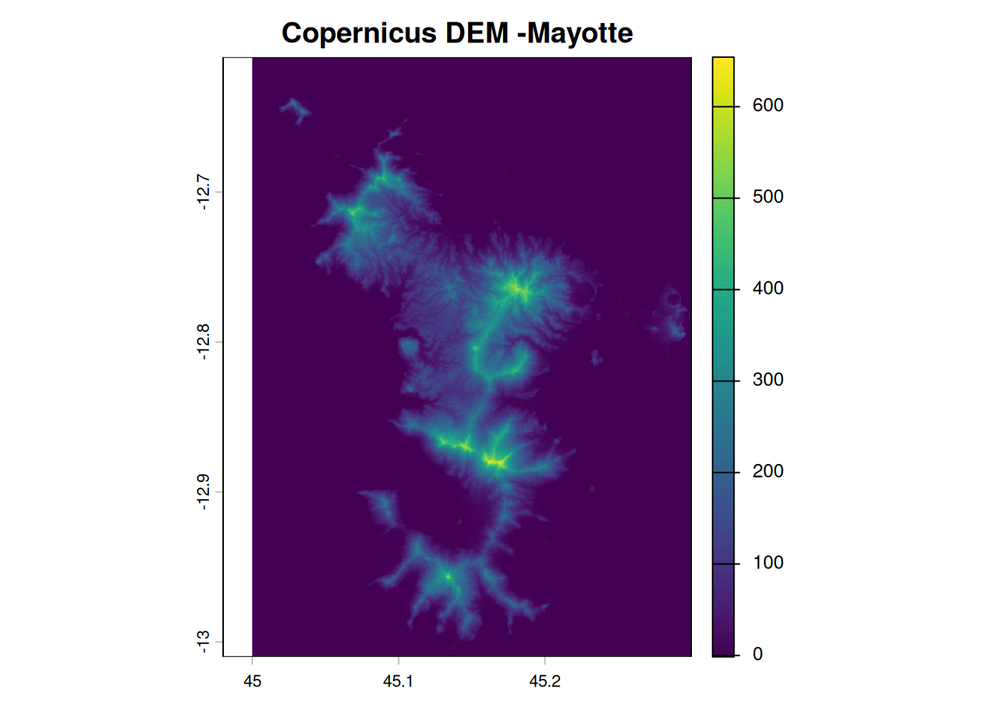
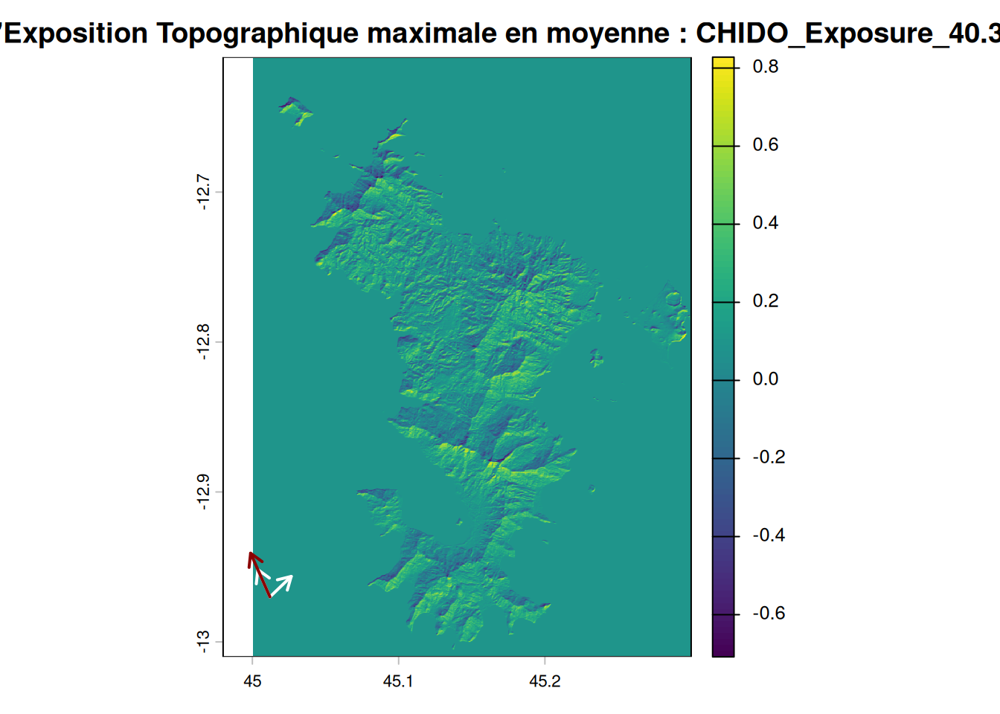

roll_dice(2)num_dice sum_dice
2 8 Alix Biton
January 1, 2026
load_all)En bonus, apprendre à utiliser RMarkdownpour faire mes rapports hebdomadaires !
Création d’une fonction roll_dice très simple simulant le lancement d’un nombre de dés num_dice et sommant le résultat de ces dés à 10 faces.
Et test de cette fonction avec l’utilisation du package testthat
Test passed with 2 successes 🎊.Puis utilisation de la commande load_all afin de charger le package correctement modifié avec la nouvelle fonction.
Compréhension de la récupération des données avec la fonction defStormsDataset(). Cette fonction vient créer une dataset complet avec les variables d’intérêts, les bonnes unités etc… base de l’étude avec ce package. Ensuite il y a la création de la liste des cyclones d’intérêts avec la fonction `defStormsList(), ici essai sur le cyclone de Chido donc le filtrage se fera seulement sur le nom. Cette fonction renvoie toutes les informations trouvées pour le cyclone Chido. Ici, il y a eu 47 mesures effectuées sur ce cyclone.
On peut donc visualiser ces mesures spatialement grâce à la fonction plotStorms()

Ensuite, test des fonctions temporalBehaviour()et spatialBehaviour(). La première renvoie les informations temporelles sur le vent en certains points pour plusieurs métriques :
La seconde renvoie des informations spatiales avec la création d’un raster. Ici aussi plusieurs métriques possibles, cependant, pendant les tests, la métrique Profiles et Exposure lors des tests a fait planter la session R. Résultats possibles pour MSW, le Markdown n’a pas supporté et ca a fait arrêter la session R.
A tester sur le fichier R : tests_pack.R
hillShade() du package rasterPour récupérer les données d’altitudes d’une zone géographique, il faut aller dans le Copernicus Browser, onglet Visualise. Il faut ensuite cadrer avec le polygone/carré la zone d’intérêt, en l’occurence ici, la zone de Mayotte. Laisser le mode Configuration sur Default et choisir dans Data Collections Copernicus DEM et choisir Copernicus 30. Pour télécharger le fichier .tiff, appuyer sur l’icône Download Image sur la barre d’icônes à droite de la page. Aller dans l’onglet Analytical et ici :
Cliquer sur Download et un fichier .tiff est téléchargé.
Visualisation de l’élévation de Mayotte (avec le package terra)

Sur le cas du cyclone Chido, j’ai récupéré l’exposition topographique au vent pour chaque mesure prise dans mon loi (location of interest) qui est la zone de Mayotte (~300km). Cette exposition topographique est décrite comme une variable quantitative “Exposure” et peut être lue comme un indice d’exposition au vent pour chaque cellule d’une grille (un raster). Les valeurs négatives représente les aires protégées du vent tandis que les valeurs positives représente les aires exposées au vent.
Pour calculer cette métrique, il faut récupérer les données de Profiles présentes dans la fonction spatialBehaviour() ainsi que la pente (slope) en radians et l’exposition/orientation des versants (aspect) en radians.
Dans Ibanez et al.2024, la fonction utilisée pour calculer l’exposition topographique au vent est raster::hillShade(). Cependant, ce package n’est pas dans les dépendances du package StormR contrairement à terra. De plus le package terra est un package, plus jeune, de remplacement de raster. On utilisera donc la fonction terra::shade() pour calculer l’exposition topographique au vent.
Pour utiliser la fonction terra::shade(), il faut un angle et une direction. L’angle utilisé sera l’angle d’inflexion de 6° (Boose et al.1994). Pour la direction, on veut récupérer la direction que prend le vent lorsque sa vitesse est maximale dans un layer c’est-à-dire la direction de la cellule ayant le Vmax.
On obtient donc un raster appelé ici topo comprenant l’exposition topographique au vent à chaque mesure à partir d’une direction. On peut ainsi récupérer le layer ayant la plus haute exposition en moyenne.

Les flèches blanches ici représentent l’étendue des directions de vents tout au long du cyclone tandis que la flèche rouge représente la direction pour le layer considéré.
computeExposureAprès la réunion, plusieurs idées émergent pour décrire et développer la fonction computeExposure() qui calcule l’exposition topographique au vent.
Dans l’idée, la fonction aurait plusieurs paramètres indispensables de données ainsi que des paramètres optionnels. Au premier abord la fonction ressemblerait à :
pf correspond aux profiles (spatRaster) issus de la fonction spatialBehaviour() avec les informations de vitesse et de direction des cyclones.dem correspond aux données d’élévation (de relief) pour une loi (en .tif ou .tiff).names correspond au nom du cyclone sur le(s)quel(s) on veut l’exposition topographique.anglecorrespond à l’angle d’inflexion du vent, par défaut il est à 6° (Boose.E.R, 1994).threshold correspond à un seuil de vitesse sur lequel on veut garder les informations. Par défaut, on ne garde que les profiles ayant une vitesse maximale supérieure ou égale à 50m/s (Catégorie 3 des cyclones) pour calculer l’exposition topographique.L’output de la fonction computeExposure est un spatRaster avec autant de raster qu’il y a d’observations pour chaque cyclone. La terminologie des couches du spatRaster est comme ceci : STORM_Exposure_01. Cela reprend la syntaxe des profiles de spatialBehaviour().
Cet output ne résume pas bien l’exposition topographqiue au vent de l’entièreté du cyclone d’intérêt donc il faudrait, une manière de visualiser des donénes résumant bien l’ensemble du cyclone. Il faut donc peut être une autre fonction integrateExposure() ayant comme output des produits intégrés de l’exposition topographique.
Il y aurait les produits suivants :
Enfin, il faudrait une dernière fonction qui permette de visualiser les ourtput nommée par exemple plotExposure() qui reste très simple, dans la même idée que plotBehaviour().
Pour récupérer les données de DEM et de végétation avec Sentinel L2A, il y a le package R openEO qui est facile d’utilisation et permet de choisir la zone d’intérêt sans avoir à se prendre la tête sur les tuiles. Il suffit d’avoir le polygone d’intérêt et que les données voulues soient disponibles dans les collections openEO. Il faut aussi un compte Copernicus.
La démarche et le code est expliqué dans le panel Extract Data –> Digital Terrain Model & Vegetation Data